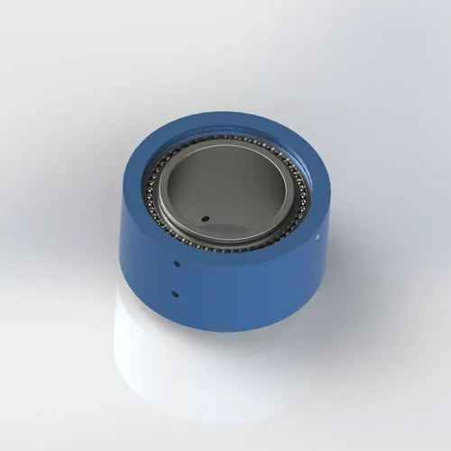

高圧空気および液体用途のための頑丈な2-流路 ロータリージョイント。 PTFEの合成シールのアルミ合金6061ボディ。 最高の5 MPa、か。230 mm外径。 7日以内に出荷。
BP-2P-130-0001は高圧空気および油圧用途のために設計されている頑丈な二重流路 ロータリージョイントです。 PTFEの合成シールは80 RPMの低い摩擦トルクの5 MPaの連続的な義務のために評価されます。 アルミ合金6061ボディは回転固まりを限る間大きい工作機械用途を支えます。
| 型式番号 | BP-2P-130-0001の特長 |
|---|---|
| 流路 の数 | 2-in-2-out (デュアル流路) |
| マウントタイプ | フランジ取付 (8-M0 + 8-M10) |
| 最高の圧力 | 5 MPa (50 bar/725 psi) — 60 RPM の上の連続的な油圧オイルの義務のための 4 MPa にderate |
| 最高の速度 | 80 RPM — 50 RPM の連続的な水か冷却剤のための 5 MPa にあてて下さい |
| ボディ材料 | アルミ合金6061 |
| シールタイプ | PTFE (テフロン) FKM Oリングのバックアップが付いている合成シール |
| 互換性のあるメディア | 空気、水、水溶性の冷却剤、軽い油圧オイル(ISO VG 32最高) |
| 動作温度 | -20°C に +80°C |
| 純重量 | 交通アクセス 8.66 kg (8,655 g) |
| 認定資格 | ISO 9001:2015のセリウム、RoHS |
| 品質保証 | 12ヶ月 |
アルミ合金6061ボディ: 正式な工学デッサンはアルミ合金6061を指定します。 陽極酸化された表面は水および冷却剤の環境の耐食性を支えます。 付加的な保護コーティングなしで研摩の冷却剤のために推薦されません。
5 MPaのPTFEの合成のシール: ガラス繊維およびグラファイトの注入口が付いているPolytetrafluoroethyleneは、構造的に高圧義務のために補強しました。 5MPaでの押出抵抗時の低摩擦係数を維持します。 FKM Oリングはハウジング インターフェイスで静的なシーリングを提供します。 4MPa以上の連続油圧オイルは、デューティサイクルに適した間隔でシールを検査します。
BP-2P-130-0001は、大型工作機械や産業機器にデュアル流体チャネルが必要である高圧、低速用途向けに設計されています。 このモデルは、流路カウント、マウント、媒体、圧力、速度、温度制限が機械の要件に一致したときにリストされた用途に適しています。
5 MPa では、フランジ ボルトトルクやろ過の小さな誤差は、数時間以内に大きな漏れになります。 早期故障の最も一般的な原因は、AL6061ハウジングフェイスを警戒し、リークパスを作成するフランジボルトを監督しています。 信頼性の高い高圧操作のために、これらの手順に従ってください。
フランジは8×M0および8×M10 ねじ式の穴を多用性があるボルト サークルで確認します。 P.C.D.の特長 では、5 MPaのフランジ歪みを防止するために0.1 mm内で一致しなければなりません。 ダウンロード正確なP.C.D.、穴の深さおよび許容のための2Dデッサン。 カスタムのボルト パターンは10日の調達期間と利用できます。 フランジ のマットが鋳鉄か鋼鉄、AL6061 の表面をスコアできる棒のための点検なら。
ばねの洗濯機が付いている8×M0および8×M10の等級8.8ねじを使用してフランジを保障して下さい。 トルク M10〜12〜15 N・mとM0〜8～10 N・mのスターパターンで、負荷を均等に分配します。 AL6061 フランジの表面を歪めること;下向きは5 MPaの漏出を可能にします。 フランジの平坦度をフィーダーゲージでチェック — ギャップは <0.05 mm. AL6061への鋼鉄ボルトの反セーズの混合物の薄いフィルムを、胆になることを防ぐため加えて下さい。
BP-2P-130-0001には、固定住宅の回り止めタブが含まれています。 固定ブラケットにM8ボルトトルク15～20N・mの固定ブラケットに固定します。 8.66 kgの質量は、ホースをせん断し、フランジを損傷を与える破壊的なジャイロスコープトルクを作成します。 回り止めブラケットは、回転部品から >5 mmクリアランスを持っている必要があります。
高圧適用範囲が広いホースを使用して下さい(評価されるに 10 MPa 最小) 固定側を接続します。 堅い管は振動および熱拡張を接合箇所に直接移しま、シールを強調します。 インストールする 25-micron フィルター上流 — で 5 MPa, でも 40PTFE のシールで埋め込まれる -micron の粒子は漏出道を作成します。 油圧オイルのために、使用して下さい 10-micron の絶対フィルターは金属の破片からシールを保護します。
0.2 MPaと20–30 RPMでロードなしで10分間実行します。 PTFE シールは、5 MPaの動作圧力の前に低応力でシャフトに対してベッドします。 すべての4つのシールインターフェイスを漏出のために点検して下さい。 1 MPaの圧力をフル動作圧力に達するまで5分ごとに大幅に増加させます。 高圧ランインをスキッピング 5 MPaで始まる初期のシール失敗の#1原因はすぐにシールの表面で微小スコアリングを作成します。
完全な次元、許容、ねじの指定、フランジ ボルトパターン (8-M0 + 8-M10)、P.C.D.、シャフトの終わりの条件およびシールの溝の細部。 120 KB。
問い合わせ後に提供される3Dファイルを無料で配布しています。 アルミ合金6061のボディ幾何学、厳密なフランジの幾何学およびポートのオリエンテーションを含んで下さい。 注文する前にCAD干渉確認のために使用して下さい。
完全なガイド:フランジの土台、トルクの指定、反回転、高圧ろ過、操業プロシージャおよび維持のチェックリスト。 650 KB. リリース
アルミ合金6061の物質的なトレーサビリティおよびRoHSの承諾の文書。 ご要望に応じて承ります。
BP-2P-130-0001が正しいモデルかどうかはわかりませんか? この比較を使用して、より高い圧力、高速、または防塵ジョイントにアップグレードするときに正確に決定します。
| あなたの条件 | BP-2P-130-0001は合います | より良い代替 | なぜアップグレードするのか |
|---|---|---|---|
| 単一空気ライン、手持ち型用具、必要な密集した接合箇所 | 8.66 kg は、 | BP-1P-0003の特長 | 0.27 kgの単一の流路 |
| 二重空気ライン、1 MPaの一般的なオートメーション | ⚠️ 過剰指定 | BP-2P-0001の特長 | 同じ流路、1 MPaのライターおよびより低い費用 |
| 二重ライン、5 MPaの油圧、≤80 RPM | ✅ パーフェクト | — | — |
| 圧力 >5 MPa | 圧力の上の× | 技術確認の特長 | 検証済みの高圧設定を要求する |
| 速度 >80 RPMの >2 MPa | 速度を超過して下さい | カスタム高速油圧 | PTFE シールは高速高圧コンボのために評価されません |
| ほこりや研磨環境(スチールミル、鋳物) | ・・・防塵なし | BP-2P-50-0001の特長 | 防塵 シールおよび保護shroud |
| 食品対応か医学のクリーンルーム | *2 標準的な シール の FDA 無し | カスタム FDA対応 | FDA 21 CFR 177.2600迎合的なFKMかEPDM シール |
BP-2P-130-0001の保証の要求の#1原因はフランジのボルトを監督しています。 技術者は、指定された12〜15 N・mの代わりにM10ボルトを25 N・mにトルクします。 AL6061 フランジの表面は0.1 mmによって、5 MPaで油圧オイルを時間内に吹き込む漏出道を作成します。 8～10N・mを超えるM0ボルトトルクで同じことが起こります。 ルール: キャリブレーショントルクレンチを使用してください。 星のパターンで締めます。 M10:12〜15 N・m。 M0: 8–10 N・m。 フランジの平坦度をフィーラーゲージでチェックします。
マシンビルダーは、油圧インデックステーブルで120 RPMを必要とし、5 MPaの評価は、すべての速度をカバーしています。 120 RPMおよび5 MPaでは、遠心力はシャフトの表面からのPTFE シールの唇を、すぐに壊滅的な漏出を引き起こします持ち上げます。 シールは、高速高圧ではなく、低速高圧用に設計されています。 ルール: 80 RPM の限界を 5 MPa で点検して下さい。 カスタムの高速油圧シールの設計のためのより高い速度が必要な場合は、Begapunkにお問い合わせください。 標準的なジョイントコストで200ドルの節約は、ダウンタイムとクリーンアップで800ドルです。
メンテナンスチームは、BP-2P-130-0001を油圧プレスにインストールし、5 MPaと60 RPMですぐに実行します。 PTFE シールはシャフトの表面に寝ていません — 微細な高い点は完全な圧力の下のスコープを作成します。 3週間以内に、油圧オイルは2 L /時間で漏れ、作業エリアを汚染します。 チームは シール を置き換えますが、毎回実行をスキップしているため、同じことが起こります。 ルール: 0.2 MPaと20–30 RPMで10分間実行し、1 MPaで5分ごとに増加します。 シール寿命を3ヶ月から8〜10ヶ月に拡張します。
その他のロータリージョイントは、一般的にBP-2P-130-0001で購入 - または用途がこの圧力または速度範囲を上回るときにアップグレードするモデル。
正式な技術図面はBP-2P-130-0001のためのボディ材料としてアルミ合金6061を指定します。 代替材料については、別途の検証設定については、技術チームにお問い合わせください。 すべてのバージョンは、ISO 9001:2015の品質管理の下で製造され、CEおよびRoHS認証を運びます。 完全なトレーサビリティの物質的な証明書は要求に応じて利用できます。
はい — PTFEの合成シールおよびFKM OリングはISO VG 32までの水、水溶性の冷却剤および軽い油圧オイルと互換性があります。 5 MPaの連続的な水義務のために、50 RPMへの速度を変形させてシールの摩耗を減らすため。 アルミ合金6061ボディは耐食性のために陽極酸化されます。 連続的な水液浸か、または脱イオン水のために、ボディ材料および表面処理の技術確認を要求して下さい。 常に適切なろ過を水義務のために使用して下さい。
BP-2P-130-0001 は 8×M0 および 8×M10 穴が付いている二重ボルト円円の フランジ を使用します。 ダウンロード正確なボルト円径(P.C.D.)、穴のサイズ、深さおよび許容のための2D PDFのデッサン。 0.1 mm内のフランジのマッチを発注する前にあなたの装置に合うことを保障します。 カスタムのボルト パターンは、メトリックM8/M12または帝国UNCの構成を含んで、10日のリードタイムと利用できます。 フランジのガスケット材料はあらゆる順序と含まれています。 高い振動環境のために、ロック洗濯機かねじ-lockingの混合物を指定して下さい。
はい — 3D STEP および IGES ファイルは、お問い合わせの送信後に提供されます。 ファイルはアルミ合金6061のボディ幾何学、ボルト孔パターンおよびポートのオリエンテーションを含んでいます。 クリアランス、P.C.D. を検証するために 3D ファイルを使用します。 順序の前にあなたのCADアセンブリの直線そしてホース配管経路。 3Dファイルは、用途要件がレビューされた後に修飾されたプロジェクトのために提供することができます。 ファイルの可用性と応答時間は、モデルと提供されているプロジェクト情報に依存します。 カスタム 設定ファイルタイミングは、プロジェクトレビューによって異なります。
用途が5 MPaの圧力限界か80 RPMの速度の限界を超えた場合技術確認を依頼。 他の制動機は3つ以上の独立したチャネル、ほこりか研摩の環境、別の材料、または非標準的な土台のための必要性を含んでいます。 BP-2P-95-0001を高圧に代入しないで下さい;承認された最高は1 MPa/10 barです。
流路、圧力、ねじのタイプおよび土台様式のあらゆる数のためのカスタムロータリージョイントを設計します。 すべてのお問い合わせで3D STEPファイルを無料で入手できます。 典型的なカスタムリードタイム:10〜14日。
リクエスト カスタム設計 →技術的なノート: このページで参照されるすべての圧力仕様、回転速度仕様および物質的な指定は管理された実験室の条件の下でテストされるBegapunk BPシリーズ標準空気圧ロータリージョイントに基づいています。 実際のパフォーマンスは、動作条件、メディアの品質、インストール慣行、メンテナンススケジュールによって異なります。 5 MPa、連続的な水液、食品対応、またはクリーンルームの環境の上の高圧油圧を含む標準仕様 - 仕様の前にBegapunk 技術部門に相談して下さい。 最終更新日: 2026年6月11日